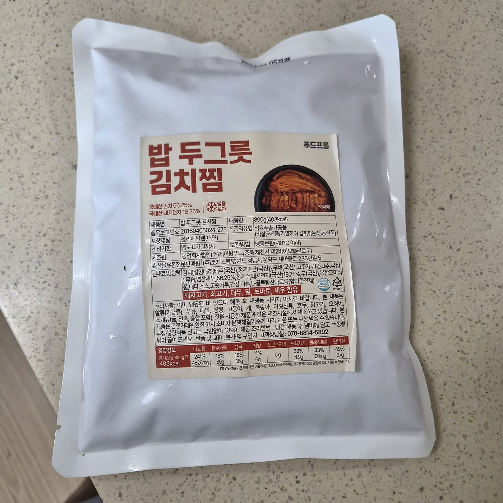
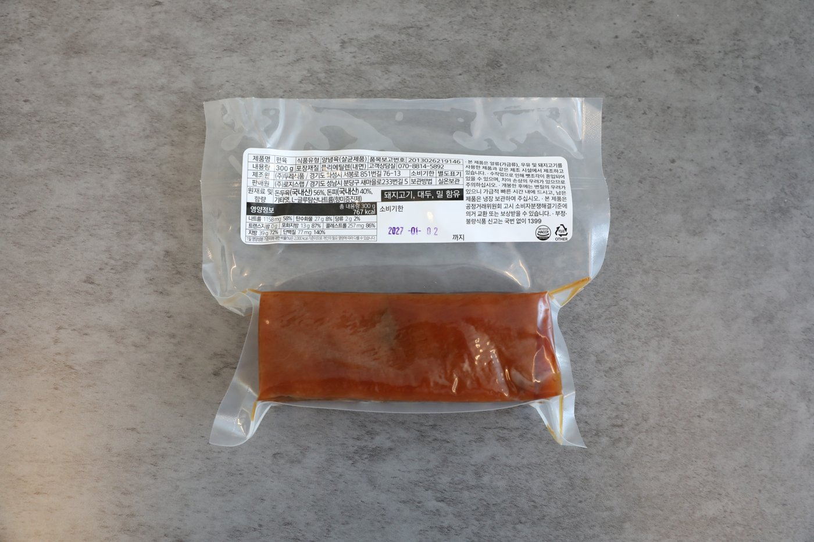
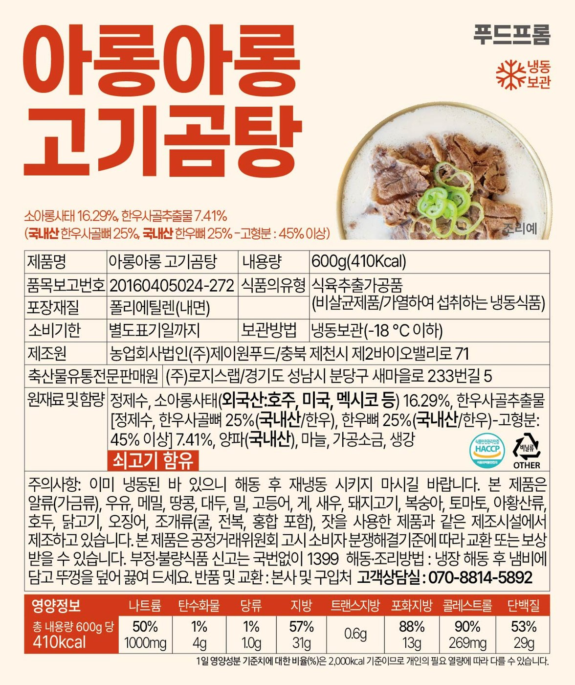
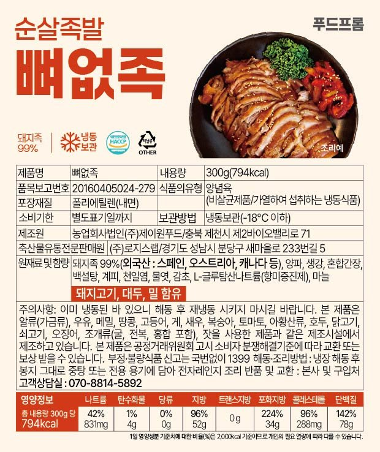
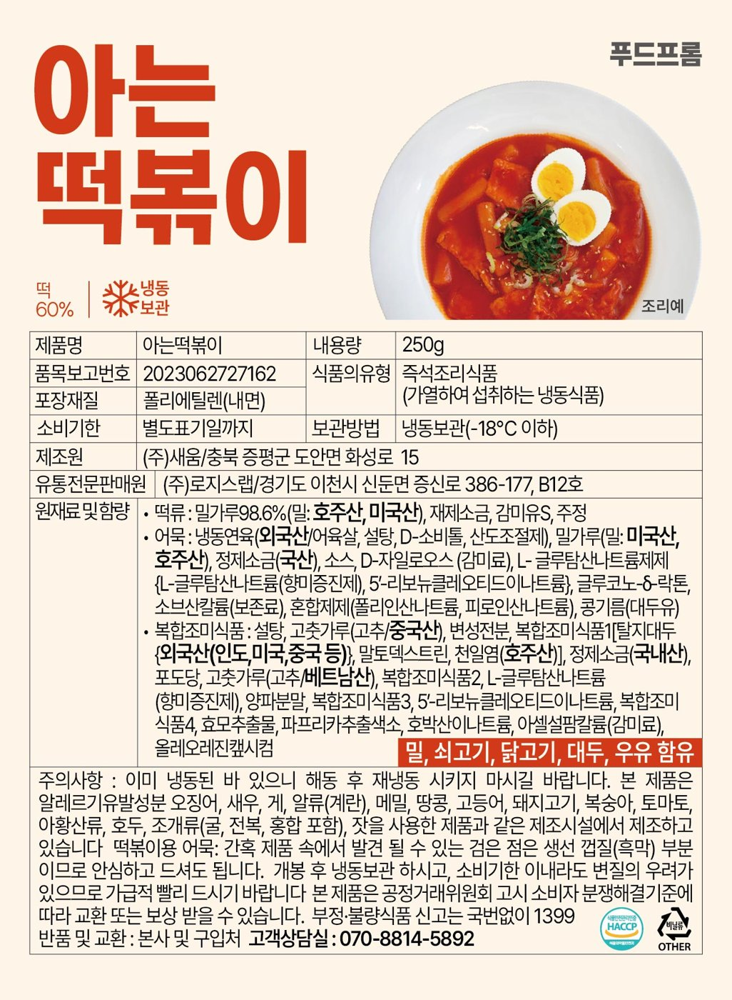
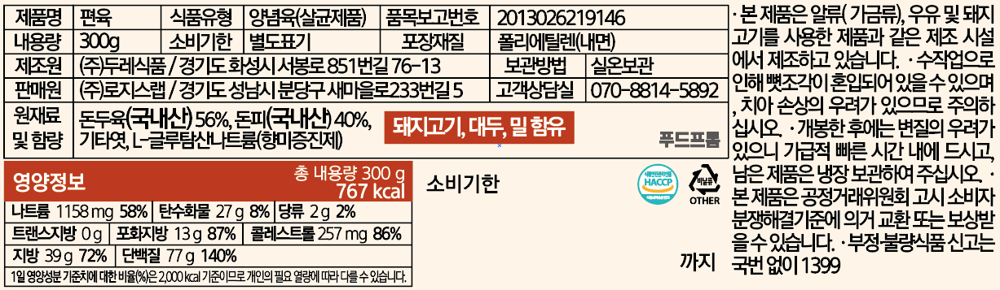

Product Design
푸드프롬이 무엇을 파는가. 제품 라인업과, 그 제품이 담기는 패키지·스티커의 규격. 인쇄 업체에 넘기는 모든 사양이 여기 있습니다.
01Lineup
| 제품 | 포장 유형 | 스티커 | 시안 |
|---|---|---|---|
| 김치찜 | 냉동 파우치 | 세로형 컬러 | 미확인 |
| 곰탕 | 냉동 파우치 | 세로형 컬러 | 있음 |
| 뼈없족 | 냉동 파우치 | 세로형 컬러 | 있음 |
| 아는떡볶이 | 냉동 파우치 | 세로형 컬러 (v3) | 있음 |
| 편육 | 진공 투명 | 가로형 컬러 | 있음 |
| 순살족발 | 미정 | 미정 | 상세페이지만 |
| 마라볶음밥 | 미정 | 미정 | 카피만 |
정리 필요 제품별 내용량·가격·판매 채널이 아직 이 표에 없습니다.
02Naming
미작성. 미작성
현재 네이밍에는 두 계열이 섞여 있습니다.
| 계열 | 사례 | 성격 |
|---|---|---|
| 직설 | 곰탕 · 편육 · 김치찜 · 순살족발 | 검색어 그대로 |
| 말장난 | 아는떡볶이 · 말도마라볶음밥 · 뼈없족 | 기억에 남는 쪽 |
정해야 할 것 — 말장난 네이밍을 어디까지 허용할지. 온라인 판매는 검색 유입이 절대적이라, 제품명이 검색어에서 멀어지면 노출이 죽습니다.
유력한 절충 — 제품명은 검색어로, 별명은 카피로.
떡볶이로 팔고 상세페이지에서아는떡볶이라 부르는 방식.
- 말장난 네이밍의 허용 범위 결정
- 플랫폼 상품명 규칙 (검색어 + 브랜드 + 중량)
- 제품명 / 별명 분리 여부
03Package System
전제 · 패키지 제작비 부담으로 전용 인쇄 포장재를 쓰지 않습니다. 기성 무지 포장재 + 스티커 1장이 현재의 전부이며, 당분간 이 조건이 유지됩니다.
즉, 스티커가 브랜드의 유일한 물리적 면입니다. 패키지 디자인 = 스티커 디자인이며, 모든 물성 규정은 이 한 장에서 작동해야 합니다.
포장 유형
| 유형 | 제품 | 포장재 | 스티커 |
|---|---|---|---|
| 냉동 파우치 | 김치찜, 곰탕, 뼈없족, 아는떡볶이 | 백색 무지 파우치 (폴리에틸렌 내면) | 전면 중앙 · 세로형 컬러 |
| 진공 투명 | 편육 | 투명 진공 파우치 | 상단 · 가로형 컬러 |
배송은 아이스박스 + 아이스팩 동봉 택배.


확정
04Sticker Spec
세로형 템플릿 (냉동 파우치)
현행 템플릿은 이미 브랜드 컬러 위에서 작동하고 있습니다. 구조를 규격으로 고정합니다.
| 영역 | 내용 |
|---|---|
| 배경 | 아이보리 계열 |
| 제품명 | 번트오렌지, 초대형 굵은 고딕, 좌측 정렬 |
| 브랜드 표기 | 푸드프롬 우측 상단 고정 |
| 서브 카피 | 원료 함량 · 원산지 (제품명 하단) |
| 조리예 이미지 | 우측 상단 원형 마스크 + 조리예 캡션 |
| 아이콘 | 냉동보관 · HACCP · 분리배출 |
| 표시사항 | 표 형식 (→ 05) |
| 알레르기 | 번트오렌지 테두리 강조 박스 |
| 주의사항 | 본문 |
| 영양정보 | 하단 가로 표 · 아이보리 바탕 |
| 고객상담실 | 070-8814-5892 |



규격
| 제품 | 원본 크기 | 비율 |
|---|---|---|
| 곰탕 | 1240 × 1476 | 1 : 1.19 |
| 뼈없족 | 620 × 738 | 1 : 1.19 |
| 아는떡볶이 (v3) | 1299 × 1772 | 1 : 1.36 |
아는떡볶이는 파우치 크기가 달라 비율을 다르게 잡은 것으로, 의도된 차이입니다. 스티커 규격은 하나로 고정하지 않고 파우치에 맞춥니다.
규격과 무관하게 고정되는 것
- 제품명 — 번트오렌지, 좌측 상단, 스티커 폭 대비 최대
푸드프롬— 우측 상단- 알레르기 박스 — 번트오렌지 테두리
- 영양정보 — 하단 가로 표
- 고객상담실 —
070-8814-5892
가로형 템플릿 (편육)

이전 흑백 표기에서 개선되어 브랜드가 올라왔습니다.
| 항목 | 상태 |
|---|---|
푸드프롬 워드마크 |
반영 (중앙 우측) |
| 번트오렌지 적용 | 반영 (영양정보 헤더 · 알레르기 박스) |
| 아이보리 배경 | 반영 |
| 표시사항 · 영양정보 | 반영 (3단 구성) |
| 대형 제품명 | 없음 — 편육이 표 안의 한 칸으로만 존재 |
| 조리예 이미지 | 없음 |
남은 과제 — 현 시안은 표시사항 라벨이지 브랜드 면이 아닙니다. 세로형은 제품명이 시선을 먼저 잡는데, 편육은 표부터 읽힙니다. 가로형이라 공간이 빠듯하지만 좌측 끝에 세로 배치로
편육을 크게 넣는 방식을 검토합니다.
05Label Data
모든 스티커에 들어가는 법정 표시사항 항목입니다.
| 항목 |
|---|
| 제품명 |
| 내용량 |
| 품목보고번호 |
| 식품의 유형 |
| 포장재질 |
| 소비기한 |
| 보관방법 |
| 제조원 |
| 유통전문판매원 |
| 원재료명 및 함량 |
| 강조 항목 | 처리 |
|---|---|
| 알레르기 유발물질 | 번트오렌지 테두리 박스 |
| 영양정보 | 하단 가로 표 · 아이보리 바탕 |
| 고객상담실 | 070-8814-5892 |
있음 제품별 실제 값은 각 스티커 원본에 있으며, 이 문서로 옮겨오는 작업이 남아 있습니다.
06Print Spec
현재 조건
| 항목 | 내용 |
|---|---|
| 포장재 | 기성품 (투명 비닐 + 냉동식품 백색 봉투) |
| 인쇄 | 스티커만. 포장재 직접 인쇄 없음 |
| 도무송 (모양 재단) | 하지 않음 — 비용 상승 |
| 전용 포장재 1도 인쇄 | 동판 견적 300만원 초과 + 1~2개월 소요 |
편지 컨셉의 무비용 적용안
인쇄비가 늘지 않는 범위 — 스티커 판만 수정하면 되는 항목입니다.
| 적용 | 방법 | 추가 비용 |
|---|---|---|
| 우표 타공 테두리 | 스티커 외곽을 반원 반복 라인으로 (도무송 아닌 인쇄 라인) | 없음 |
| 발신인 라인 | 하단에 From. 푸드프롬 한 줄 |
없음 |
| 소인 스탬프 | 조리예 옆 또는 알레르기 박스 옆에 원형 배지 1도 |
없음 |
| 색 정리 | 배경 아이보리를 #FFFBEB로, 포인트를 #D23A18로 통일 |
없음 |
타공은 재단이 아니라 인쇄로 흉내 냅니다. 확정
07Enclosed Card
편지 컨셉이 가장 직접적으로 증명되는 지점입니다. 은유가 아니라 물건으로 존재하는 유일한 접점입니다. 제품 1개 단위로 들어가는 소형 카드, 아이보리 지류, 번트오렌지 1도 인쇄.
다만 현 예산 조건에서는 후순위입니다. 스티커 개선이 먼저이고, 동봉 카드는 스티커 판 수정이 끝난 뒤 검토합니다. 후순위
08Status Board
제품별로 남은 일.
| 제품 | 남은 과제 | 우선순위 |
|---|---|---|
| 편육 | 가로형에 대형 제품명 · 조리예 이미지 추가 | 높음 |
| 전 제품 | 무비용 적용안 4종 반영 (타공 라인 · 발신인 · 소인 · 색 정리) | 높음 |
| 김치찜 | 스티커 시안 확인 필요 | 중간 |
| 순살족발 | 포장 유형 · 스티커 미정 | 중간 |
| 마라볶음밥 | 제품화 여부 · 네이밍 확정 | 낮음 |
| 전 제품 | 표시사항 실제 값을 이 문서로 이관 | 낮음 |
See Also
Brand.md— 스티커에 얹는 그래픽 요소의 사양BX.md— 제품 카피의 톤UX.md— 상세페이지에서의 제품 설명